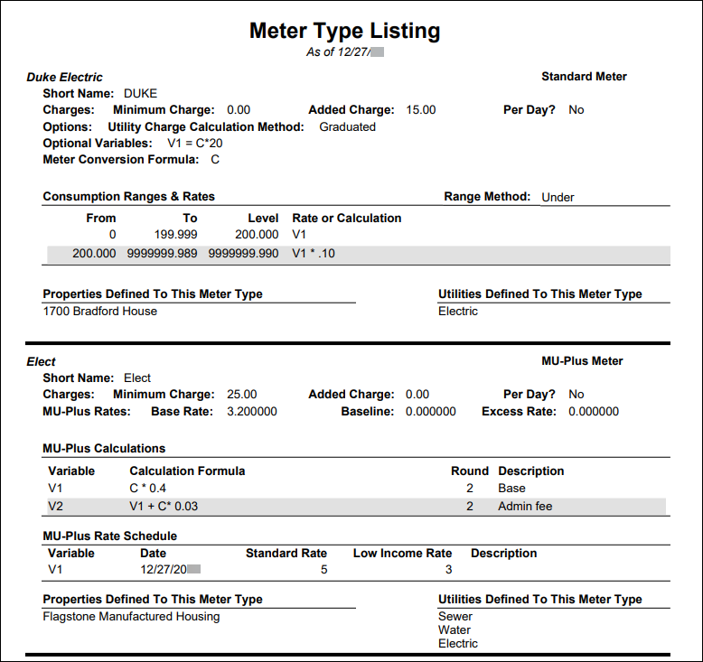
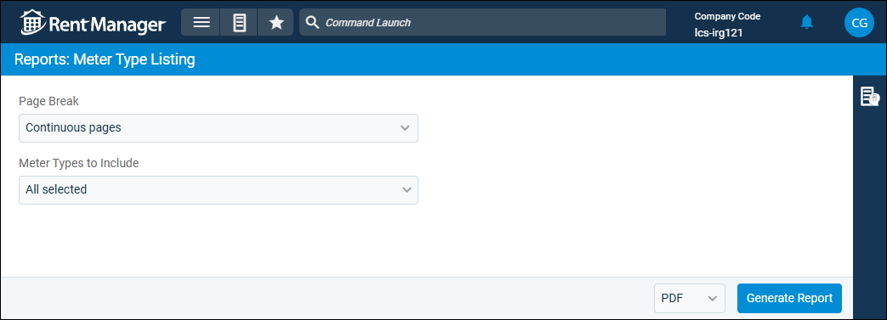

Source: https://rmxhelp.rentmanager.com/Topics/Express/Other/Reports/Meter-Type-Listing.htm
Meter Type Listing (Report)
The Meter Type Listing report displays details on the meter type, charge calculations used for standard and Metered Utilities Plus, and assignments to properties and utilities. You can use this report to export a list of existing meter types to compare details or to print a physical copy for reference.
Related Privileges
| Group | Privilege | Column |
|---|---|---|
| Letter/Email Templates/Reports/Packets | Run reports | Enabled |
Additionally, on the Reports tab, you must have access to Meter Type Listing.
For more information, refer to Control User Access.
To view the Meter Type Listing report, do the following:
-
Go to
 arrow_forward Services arrow_forward Metered Utilities arrow_forward Meter Type Listing.
arrow_forward Services arrow_forward Metered Utilities arrow_forward Meter Type Listing.
The Reports: Meter Type Listing page displays. -
Adjust the report options as desired. Each option is described below.
-
Generate the report in your desired file format(s).

Report Options
The report options described below determine what data displays in the report.

Page Break
Select Continuous pages to allow multiple utilities to display on a page. Select New page each record to break to a new page for each utility.
Meter Types to Include
Select each meter type to be examined in the report.
Report Results
The report results are described below including, if applicable, section, column, and subreport descriptions.
Report Header
The report header displays the report name and key information selected in the report options, such as date information and which properties were examined in the report.
Column Descriptions
The columns that display in the report are described below.
| Column | Description |
|---|---|
|
Name |
The Name set on the meter type's details page. |
|
Standard/MU-Plus Meter |
Defines if the meter type is either Standard or MU-Plus. |
|
Short Name |
The Short Name set on the meter type's details page. |
|
Charges |
Lists the Minimum Charge and if there is an Added Charge (flat fee) included in the amount billed each cycle. |
|
MU-Plus Rates |
The Base Rate (BR), Base Line (BL), and Excess Rate (XR) set on the meter type's details page. Displays only on MU-Plus meter types. |
|
Per Day? |
If Yes, the Minimum Charge is applied for each day in the meter billing period. If No, the Minimum Charge is applied only once per billing period. |
|
Options |
Defines if the Utility charge Calculation Method is Standard and charges based on consumption using a single calculation or Graduated and charges based on the calculation set in the consumption tier for the usage amount. Displays only on Standard meter types. |
|
Optional Variables |
The Calculation set on the meter type's details page. Displays only on Standard meter types. |
|
Meter Conversion Formula |
The Conversion Formula set on the meter type's details page. Displays only on Standard meter types. |
|
Consumption Ranges & Rates |
The range From and To, which is determined by the Level and Range Method, that determines the Rate or Calculation used based on the consumption amount. Displays only on Standard meter types. |
|
Range Method |
Defines if the range includes only values less than (Under) the set amount or all values up to and including the set amount (Equal). |
|
MU-Plus Calculations |
The Variable, Calculation, Round, and Description used for calculating charges as set on the meter type's details page. Displays only on MU-Plus meter types. |
|
MU-Plus Rate Schedule |
The Variable, Date, Standard Rate, Low Income Rate, and Description that define when a specific calculation is to be used. Displays only on MU-Plus meter types. |
|
Properties Defined To This Meter Type |
The Properties associated with this meter type as selected on the meter type's details page. |
|
Utilities Defined To This Meter Type |
The utilities containing meters with the corresponding Meter Type selected on the Meter Readings Setup page. |